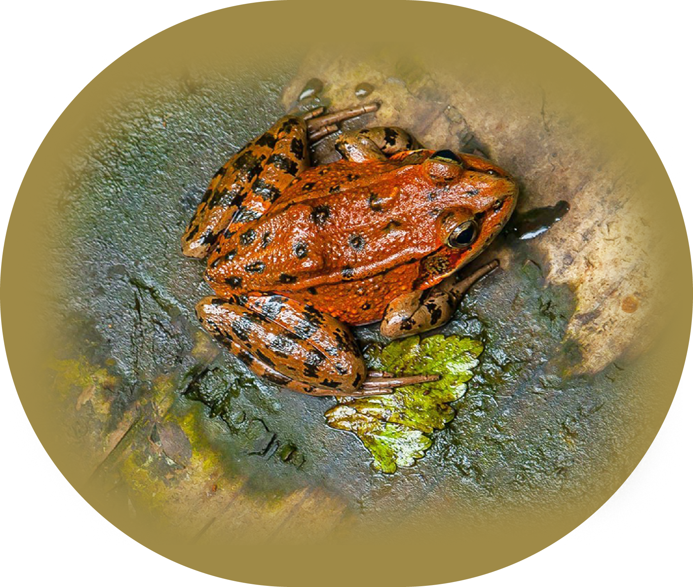
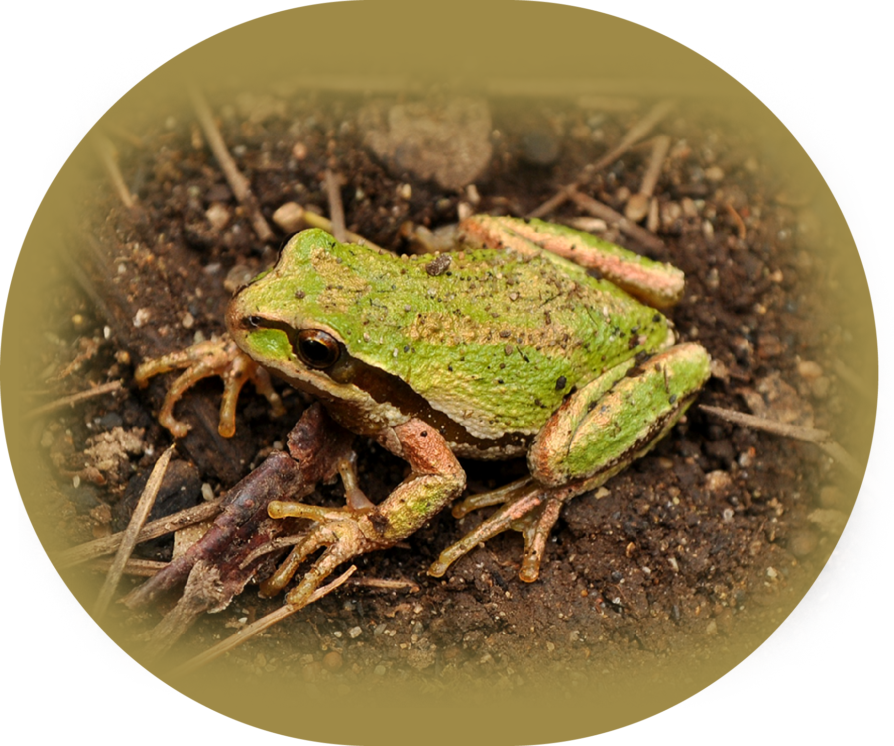
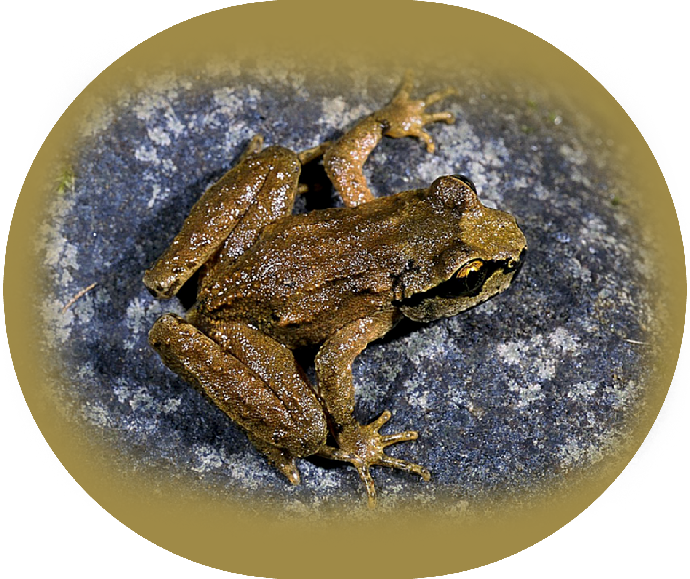
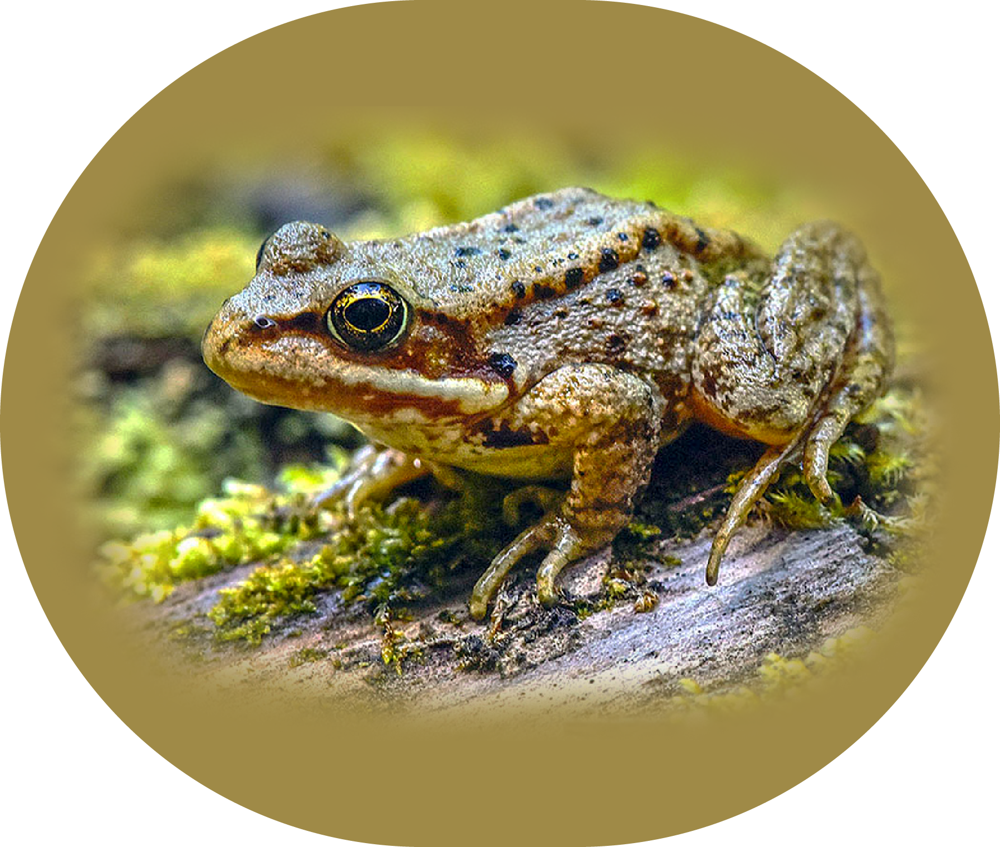
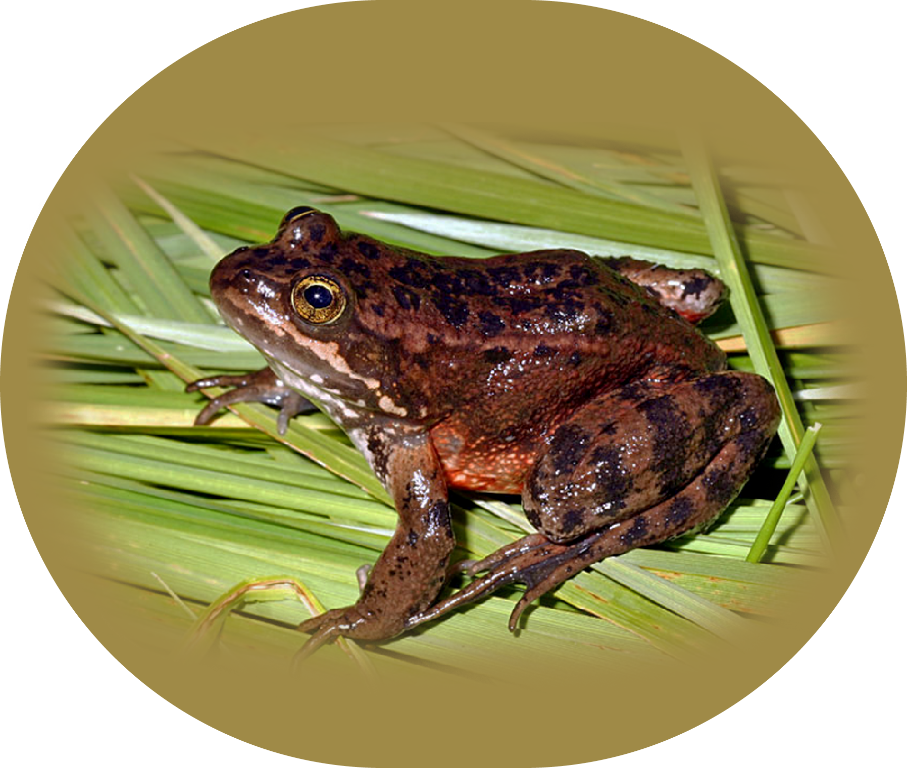

Species
    Red-Legged Frog
Rana aurora
Adults have smooth, moist skin that is brown or reddish-brown in color with black flecks on their backs, sides and legs. They may also have a dark colored mask. Adults have red underlegs, hence their name. Females, growing to four inches in length, are almost twice the size of males. Adult red-legged frogs like cool damp coniferous or deciduous forests and forested wetlands. During the non-breeding season, adult frogs spend most of their time on land in woodlands along streams, in moist sedge or brush, along shaded pond edges or under logs and other forest debris. Damp weather permits them to venture away from their primary water source into areas that would normally be too dry. They are inactive if temperatures are too cold or weather is too hot and dry. Coastal populations may remain active throughout the year.
Pacific Treefrog
Pseudacris regilla
Adult treefrogs have a dark mask that extends from the tip of the nose across the eyes to the shoulders. Coloration varies between individuals, ranging from green or reddish to brown or gray. Most have dark blotches along their sides with light colored bumpy undersides. Adult Northern Pacific treefrogs only grow to two inches in length. During the non-breeding season, this treefrog is found in various habitats that can be quite distant from water, including wet meadows, riparian areas, woodlands and brush habitats and pastures and disturbed areas. They may even find shelter in tree cavities. Individuals living east of the Cascades move into underground burrows dug by other animals or stay in streams or springs during times of dry weather. They are inactive during freezing weather.
Coastal Tailed Frog
Ascaphus truei
The coloring of adult coastal tailed frogs often matches the color of local rocks ranging from brown or reddish-brown to gray with little flecks of yellow or gray. They have grainy textured skin that further enhances their camouflage. Male coastal tailed frogs have a short tail, the signature for tailed frogs. Adult males grow to one and three-quarter inches long and adult females to two inches long. They live in very shallow and heavily shaded water of fast running, small, permanent mountain streams with cold and clear water, rocky substrates and little silt in older forests. These streams are often fishless headwater streams. During rainy weather, adults may venture onto stream banks or away from streams into areas that would otherwise be too dry. Adults spend their days hiding under streambed rocks.
Cascades Frog
Rana cascadae
Adult Cascades frogs have tan, copper or green backs with black spots and yellow bellies. Their skin has small bumps on the back and sides. Females, which grow to three inches in length, are slightly larger than males. Cascades frogs live in a variety of moist habitats including mountain meadows, bogs, seasonally flooded forested swamps and shallow ponds, marshes and lakes. They use woody debris, mud or dense vegetation for cover from predators and spend their winters hibernating in mud. They emerge during the summer and live in wet meadows and bogs or along forested streams and pond edges.
Oregon Spotted Frog
Rana pretiosa
Adult Oregon spotted frogs have moist bumpy skin that is reddish-brown on their topsides. On their heads, backs, sides and legs, they have black spots with light centers that darken with age. They also have red bellies and orange-red underlegs. Adult females grow to four inches in length and males to three inches. Oregon spotted frogs live in wet areas that provide abundant aquatic vegetation such as marshes, permanent ponds, lake edges and slow streams. When frightened, they hide in dense vegetation or under debris at the bottom of shallow wetlands. Adult frogs hibernate during the winter in freeze-free seeps, springs and channels (sometimes in mud bottoms at least one foot under water) connected to their breeding waters.